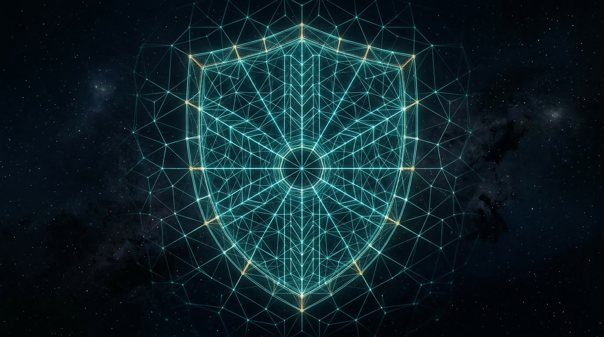
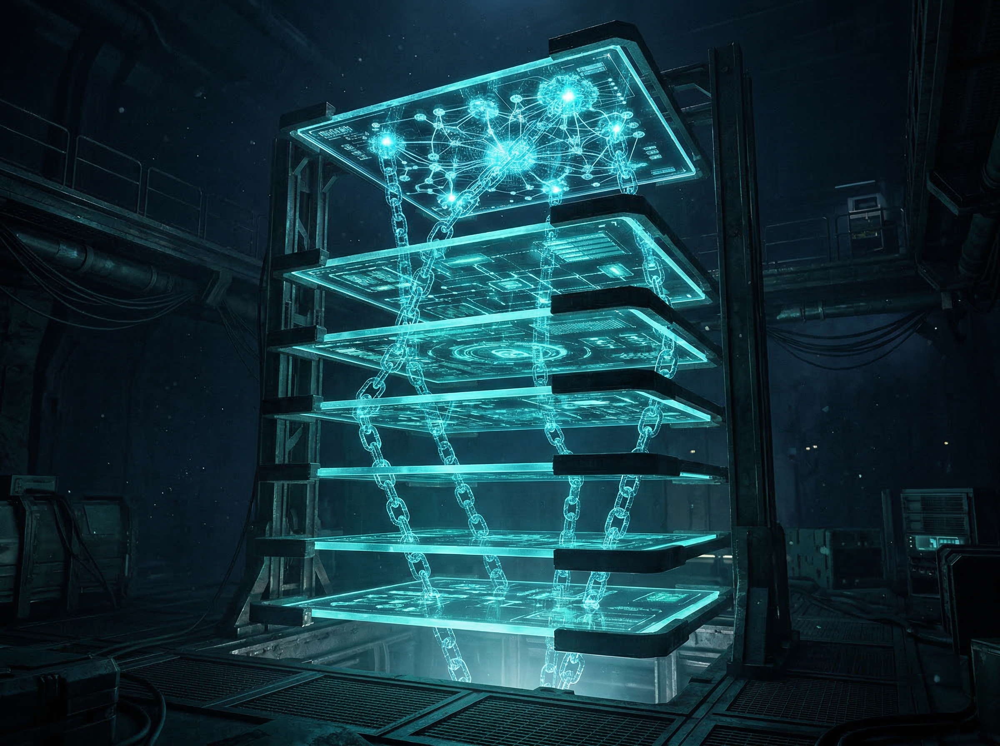
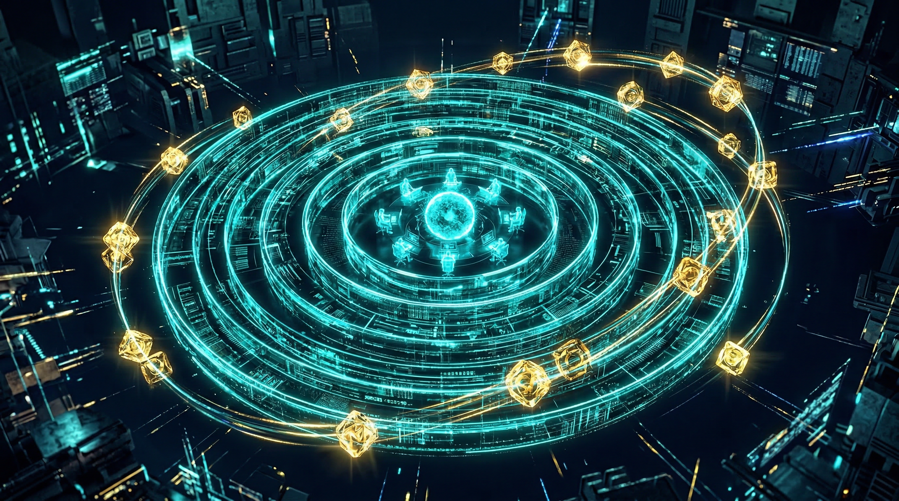

Stoic Matrix to 7-warstwowy system governance integrujący starożytną filozofię stoicką z blockchainem Solana i sztuczną inteligencją. Token CNOTA i Paszport Cnoty zastępują klasyczne głosowanie stake-weighted sprawiedliwym modelem opartym na cnocie.
System, w którym prawo głosu wynika z demonstrowanej cnoty i kompetencji, nie z wielkości portfela. Blockchain gwarantuje przejrzystość, AI weryfikuje postawę.
Dynamiczny NFT rejestrujący historię cnoty uczestnika. Virtue Score, Activity Score i Token Stake tworzą profil reputacji, który podróżuje między DAO.
Token governance na blockchainie Solana. Stake CNOTA wchodzi w skład algorytmu głosowania, ale stanowi tylko 30% wagi decyzji — 50% to cnota, 20% aktywność.
System ważonego głosowania Marcus, gdzie głos każdego uczestnika jest ważony formułą: stake (30%) + cnota (50%) + aktywność (20%). Koniec z whale-dominacją.
Wspólna przestrzeń deliberacji ludzi i agentów AI. Formalny proces: propozycja, debata, głosowanie, uchwała. Scriba AI generuje protokoły i kronikę.
Mechanizm odwoławczy dla spornych decyzji. Meta-Jury z losowo wybranych weteranów może rewizować uchwały. Slashing za celowe naruszenia karze stake i virtue score.
Warstwa AI oceniająca zachowania uczestników według czterech cnót stoickich: Mądrość, Odwaga, Sprawiedliwość, Umiarkowanie. Scoring aktualizuje Paszport Cnoty.
Każda warstwa odpowiada stoickiej kategorii ontologicznej i konkretnej technologii. Od codziennych narzędzi po AI-driven governance.

Notion, Slack, GitLab, CI/CD. Codzienne narzędzia, gdzie działania stają się metadanymi reputacji i historią zadań deweloperów.
Smart kontrakty Anchor, rejestracja mintów CNOTA, tokenizacja członkostwa i niezmiennik blockchainowy. Prawo Uniwersalne wyryte w kodzie.
Assembly, Sympozion, głosowania ważone. NFT Paszport Cnoty jako klucz członkostwa i badge governance. Epicentrism i deliberacja.
Sztuczna inteligencja jako „Cyfrowy Marcus Aureliusz" oceniający cnoty. Modele LLM, virtue scoring, klucze dostępu do zasobów AI. Logos w kodzie.
Model Marcus Assembly zastępuje klasyczne stake-weighted voting systemem, gdzie cnota, aktywność i stake razem kształtują decyzje.

Dynamiczny NFT (Metaplex) przechowujący virtue score (0-100), activity score i historię głosowań. Metadane aktualizowane przez instrukcję update_metadata_uri. Podróżuje między DAO.
Patronus (zwołujący), Senatorzy/Custodes (pełne prawo głosu), Agenci TRIAL (ograniczona waga). Status: TRIAL → Virtue Confirmed, awans oparty na wynikach cnoty.
Kodeks deliberacji: krytykuj idee, nie osoby. Ujawniaj konflikty interesów. Głosy jawne, chyba że Sympozion postanowi inaczej. Agent „Scriba" generuje kronikę.
Federacyjny most łączący wiele DAO w Stoic Network. Swap Router dla cross-DAO wymiany, Partner DAO z wzajemnym uznaniem Paszportów Cnoty.
Każdy głos w Assembly jest ważony trzema komponentami. Wersja stoicka priorytetyzuje cnotę ponad kapitał.
Solidna infrastruktura blockchainowa i AI, gotowa do integracji z istniejącymi systemami partnerów.
Szukamy partnerów DAO, deweloperów blockchain i zespołów AI, które chcą integrować model virtue-based governance w swoich projektach. Dołącz do Stoic Network.